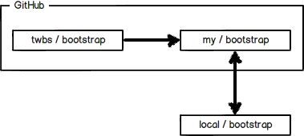

廖雪峰Git教程学习总结
该总结内容来自廖雪峰老师的Git教程，对于还不会Git的朋友，该教程非常值得一看，史上最浅显易懂了。
Git的诞生
每一个伟大工具的诞生，都有一个传奇的故事。一个伟大的牛人。
Linus花了两周时间自己用C写了一个分布式版本控制系统，这就是Git！一个月之内，Linux系统的源码已经由Git管理了！...
创建版本库
初始化一个Git仓库，使用git init命令。
添加文件到Git仓库，分两步：
- 第一步，使用命令
git add，注意，可反复多次使用，添加多个文件； - 第二步，使用命令
git commit，完成。
时光机穿梭
- 要随时掌握工作区的状态，使用
git status命令。 - 如果git status告诉你有文件被修改过，用
git diff可以查看修改内容。
版本回退
- HEAD指向的版本就是当前版本，因此，Git允许我们在版本的历史之间穿梭，使用命令
git reset --hard commit_id。 - 穿梭前，用
git log可以查看提交历史，以便确定要回退到哪个版本。 - 要重返未来，用
git reflog查看命令历史，以便确定要回到未来的哪个版本。
工作区和暂存区
暂存区是Git非常重要的概念，弄明白了暂存区，就弄明白了Git的很多操作到底干了什么。
- 工作区（Working Directory）：你在电脑中看到的目录
- 版本库（Repository）：工作区中隐藏目录".git"。Git的版本库最重要的是称为stage（或者叫index）的暂存区，还有Git为我们自动创建的第一个分支master，以及指向master的一个指针叫HEAD。
我们把文件往Git版本库里添加的时候，是分两步执行的：
第一步是用“git add”把文件添加进去，实际上就是把文件修改添加到暂存区；
第二步是用“git commit”提交更改，实际上就是把暂存区的所有内容提交到当前分支。
可以简单理解为，需要提交的文件修改通通放到暂存区，然后，一次性提交暂存区的所有修改。


管理修改
Git是如何跟踪修改的：每次修改，如果不add到暂存区，那就不会加入到commit中。
撤销修改
场景1：当你改乱了工作区某个文件的内容，想直接丢弃工作区的修改时，用命令git checkout -file。
场景2：当你不但改乱了工作区某个文件的内容，还添加到了暂存区时，想丢弃修改，分两步，第一步用命令git reset HEAD file，就回到了场景1，第二步按场景1操作。
场景3：已经提交了不合适的修改到版本库时，想要撤销本次提交，参考版本回退一节（git reset --hard commit_id），不过前提是没有推送到远程库。
删除文件
命令git rm用于删除一个文件。
如果一个文件已经被提交到版本库，那么你永远不用担心误删，但是要小心，你只能恢复文件到最新版本，你会丢失最近一次提交后你修改的内容。
远程仓库
创建SSH Key：
$ ssh-keygen -t rsa -C "youremail@example.com"
添加远程库
要关联一个远程库，使用命令git remote add origin git@server-name:path/repo-name.git；
关联后，使用命令git push -u origin master第一次推送master分支的所有内容；
此后，每次本地提交后，只要有必要，就可以使用命令git push origin master推送最新修改；
分布式版本系统的最大好处之一是在本地工作完全不需要考虑远程库的存在，也就是有没有联网都可以正常工作，而SVN在没有联网的时候是拒绝干活的！当有网络的时候，再把本地提交推送一下就完成了同步，真是太方便了！
从远程库克隆
要克隆一个仓库，首先必须知道仓库的地址，然后使用git clone命令克隆。
Git支持多种协议，包括https，但通过ssh支持的原生git协议速度最快。
分支管理
创建与合并分支
Git鼓励大量使用分支：
查看分支：git branch
创建分支：git branch name
切换分支：git checkout name
创建+切换分支：git checkout -b name
合并某分支到当前分支：git merge name
删除分支：git branch -d name
解决冲突
当Git无法自动合并分支时，就必须首先解决冲突。解决冲突后，再提交，合并完成。
用git log --graph命令可以看到分支合并图。
git log --graph --pretty=oneline --abbrev-commit
分支管理策略
Git分支十分强大，在团队开发中应该充分应用。
合并分支时，加上--no-ff参数就可以用普通模式合并，合并后的历史有分支，能看出来曾经做过合并，而fast forward合并就看不出来曾经做过合并。
分支策略
在实际开发中，我们应该按照几个基本原则进行分支管理：
首先，master分支应该是非常稳定的，也就是仅用来发布新版本，平时不能在上面干活；
那在哪干活呢？干活都在dev分支上，也就是说，dev分支是不稳定的，到某个时候，比如1.0版本发布时，再把dev分支合并到master上，在master分支发布1.0版本；
你和你的小伙伴们每个人都在dev分支上干活，每个人都有自己的分支，时不时地往dev分支上合并就可以了。
所以，团队合作的分支看起来就像这样：

Bug分支
修复bug时，我们会通过创建新的bug分支进行修复，然后合并，最后删除；
$ git checkout master
$ git checkout -b issue-101
$ git add readme.txt
$ git commit -m "fix bug 101"
$ git checkout master
$ git merge --no-ff -m "merged bug fix 101" issue-101
$ git branch -d issue-101
当手头工作没有完成时，先把工作现场git stash一下，然后去修复bug，修复后，再git stash pop，回到工作现场。
$ git stash
去修复某个紧急bug，...，完成回来
$ git checkout dev
$ git stash list
stash@{0}: WIP on dev: 6224937 add merge
$ git stash pop
Feature分支
开发一个新feature，最好新建一个分支；
如果要丢弃一个没有被合并过的分支，可以通过git branch -D name强行删除。
多人协作
- 查看远程库信息，使用
git remote -v； - 本地新建的分支如果不推送到远程，对其他人就是不可见的；
- 从本地推送分支，使用
git push origin branch-name，如果推送失败，先用git pull抓取远程的新提交； - 在本地创建和远程分支对应的分支，使用
git checkout -b branch-name origin/branch-name，本地和远程分支的名称最好一致； - 建立本地分支和远程分支的关联，使用
git branch --set-upstream-to=origin/branch-name branch-name； - 从远程抓取分支，使用
git pull，如果有冲突，要先处理冲突。
多人协作的工作模式通常是这样：
- 首先，可以试图用
git push origin branch-name推送自己的修改； - 如果推送失败，则因为远程分支比你的本地更新，需要先用
git pull试图合并； - 如果合并有冲突，则解决冲突，并在本地提交；
- 没有冲突或者解决掉冲突后，再用
git push origin branch-name推送就能成功！
如果git pull提示“no tracking information”，则说明本地分支和远程分支的链接关系没有创建，用命令git branch --set-upstream-to=origin/branch-name branch-name。
这就是多人协作的工作模式，一旦熟悉了，就非常简单。
标签管理
创建标签
- 命令
git tag name用于新建一个标签，默认为HEAD，也可以指定一个commit id； -a tagname -m "blablabla..."可以指定标签信息；-s tagname -m "blablabla..."可以用PGP签名标签；- 命令
git tag可以查看所有标签；
操作标签
- 命令
git push origin tagname可以推送一个本地标签； - 命令
git push origin --tags可以推送全部未推送过的本地标签； - 命令
git tag -d tagname可以删除一个本地标签； - 命令
git push origin :refs/tags/tagname可以删除一个远程标签。
使用GitHub
- 在GitHub上，可以任意Fork开源仓库；
- 自己拥有Fork后的仓库的读写权限；
- 可以推送pull request给官方仓库来贡献代码。
Github上Fork一个开源仓库后，开源仓库，你在Github上克隆的仓库，以及你自己clone到本地电脑的仓库，之间的关系： 
自定义Git
忽略特殊文件
- 忽略某些文件时，需要编写
.gitignore。 .gitignore文件本身要放到版本库里，并且可以对.gitignore做版本管理！
忽略文件的原则是：
- 忽略操作系统自动生成的文件，比如缩略图等；
- 忽略编译生成的中间文件、可执行文件等，也就是如果一个文件是通过另一个文件自动生成的，那自动生成的文件就没必要放进版本库，比如Java编译产生的.class文件；
- 忽略你自己的带有敏感信息的配置文件，比如存放口令的配置文件。
配置别名
$ git config --global alias.st status
$ git config --global alias.co checkout
$ git config --global alias.ci commit
$ git config --global alias.br branch
$ git config --global alias.unstage 'reset HEAD'
$ git config --global alias.last 'log -1'
git config --global alias.lg "log --color --graph --pretty=format:'%Cred%h%Creset -%C(yellow)%d%Creset %s %Cgreen(%cr) %C(bold blue)<%an>%Creset' --abbrev-commit"
搭建Git服务器
- 第一步，安装git
- 第二步，创建一个git用户，用来运行git服务
- 第三步，创建证书登录
- 第四步，初始化Git仓库
- 第五步，禁用shell登录
- 第六步，克隆远程仓库
Git的官方网站：http://git-scm.com